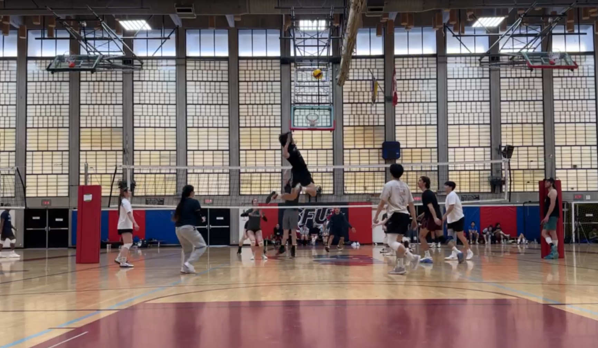

Interests
I enjoy playing volleyball with my friends, especially during the summer, and currently coach a local club team. Another sport I enjoy playing is basketball and have played it since I was 3. I also enjoy playing video games and going to the gym.
